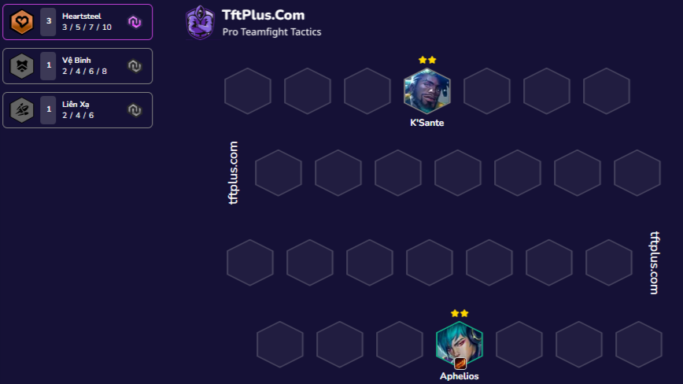
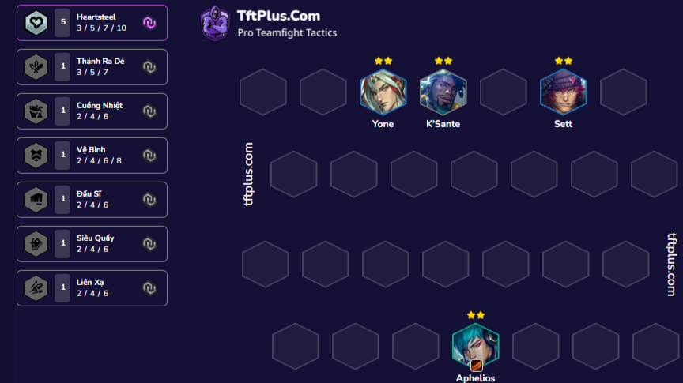
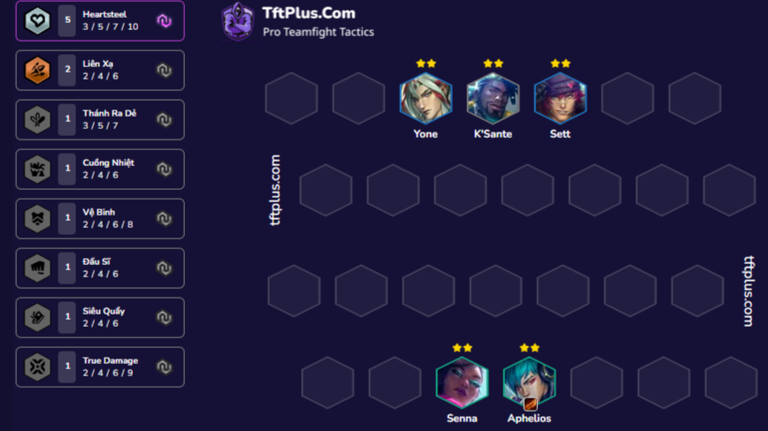
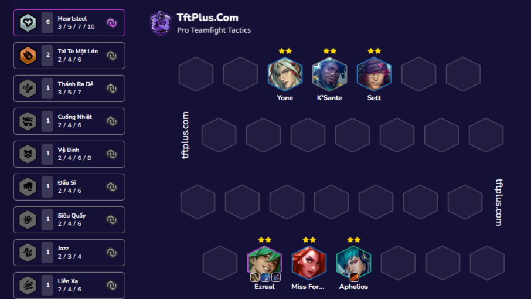
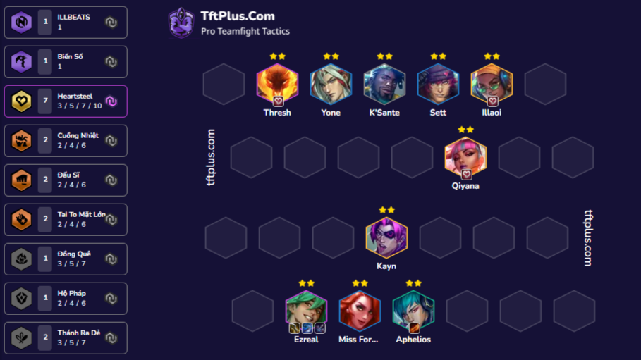

Lưu ý:Chủ page hướng dẫn cho những người ăn ở tốt có nhân phẩm đẳng cấp
Bài này điều kiện bắt buộc là tối ưu đồ có siêu sao heartsteel sớm để kích hũ dần với ước mơ đạt đỉnh cao

Nếu bãi quái mà ra cho bạn yone và sett thì còn gì cản bước bạn vậy

Việc up cấp là 1 trong những thứ rất quan trọng để thực hiện bài đẳng cấp bro vip mà thách đấu còn dừng như này
Lên cấp cố gắng tim ez kẹp cùng miss để có thể tối ưu hoá việc đép máu đồ dame ghép cho ez

Sau đó cố gắng up chess kết thúc nửa đầu form với con bài kayn giúp kích hoạt mốc 7 heartsteel và làm bố cuộc chơi

Hehe nhưng khi đã đỏ bạn không chịu dừng lại ở đó đúng không việc nổ hũ rất quan trọng vì nó có thế cho bạn xẻng hoặc sách chọn ấn nếu round đi chợ có xẻng thì chắc hẳn các bạn cũng biết việc cần làm rồi
Cuôi cùng hoàn thành form 10 heartsteel

Việc của bạn cần làm bây giò là roll up 5 vàng 3 sao và gáy thôi
Chi tiết cách ghép đồ ở đây cho bạn nào cần